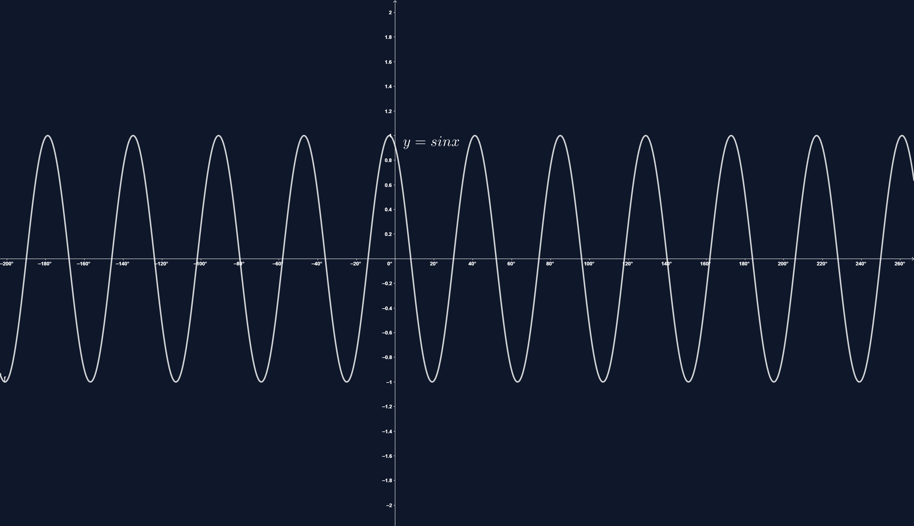

SINUSO FUNKCIJOS
Funkcijos y = f(x) = sin x:
- apibrėžimo sritis (laipsniais) yra intervalas (-∞; +∞);
- reikšmių sritis yra intervalas [-1; 1].
Funkcija y = f(x) = sin x yra periodinė. Jos mažiausias teigiamas periodas yra 360°:
sin x = sin(x + 360°)
sin 390° = sin(30° + 360°) = sin 30° = .
sin(-30°) = -sin 30° =
